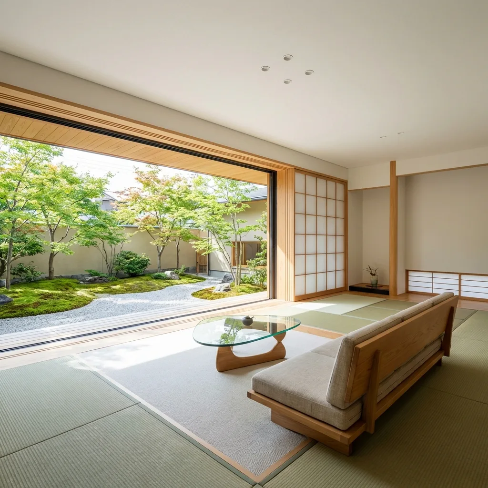

窓から、
心地よい毎日を。
ガラス一枚の修理から、住まいの快適さまで。
地域に根ざした硝子店が、
あなたの「窓の困った」に、丁寧に向き合います。

ガラス・サッシ・フィルム
窓まわりのこと、お任せください。
About us
いつもの窓に、
いつでも頼れる人を。
何気なく開ける窓。日差しの入るリビング。
その当たり前の心地よさを、私たちは大切にしています。
老田硝子店は、茨城県筑西市のガラス・サッシ専門店です。
突然のガラス割れも、ずっと気になっていた窓の不具合も。
お住まいの状態に合わせて、必要な施工をご提案します。
Our services
窓のお悩みに、できること。
直す、整える、機能を加える。
暮らしに合った方法を、一緒に考えます。

ガラス修理・交換
割れたガラスやひびの修理から、防犯・断熱ガラスへの交換まで。一枚から丁寧に対応します。
サッシ・内窓
開け閉めの不具合、すきま風、寒さや結露。サッシの調整や内窓で、窓まわりを心地よく。

窓用フィルム
強い日差しや外からの視線が気になる窓に。遮熱・目隠し・飛散防止の機能を加えます。
掲載写真は施工内容・住空間のイメージです。
Our promise
身近な硝子店として、大切にすること。
地域に寄り添う。
筑西市と近隣地域の皆さまへ。小さな修理も相談しやすい、身近な窓の専門店でありたいと考えています。
わかりやすく伝える。
お困りごとを伺い、施工の内容と費用をご説明。ご納得いただいてから作業を進めます。
一つひとつ、丁寧に。
採寸から施工、仕上がりの確認まで。毎日使う窓だからこそ、細かなところにも気を配ります。

Comfort by the window
窓を見直すと、
暮らしが変わる。
冬の寒さ、夏の日差し、毎朝の結露。
そのお悩み、窓から考えてみませんか。
内窓やガラスの交換で、もっと心地よい住まいへ。
写真は住空間のイメージです。
How it works
ご相談から、施工まで。
初めてのご依頼でも、ひとつずつ丁寧に。
内容とお見積もりにご納得いただいてから進めます。
お問い合わせ
お電話またはLINEで、気になることをお聞かせください。
現地確認・お見積もり
窓の状態やサイズを確認し、施工内容と費用をご案内します。
日程調整・施工
内容にご納得いただいたうえで日程を調整し、丁寧に施工します。
仕上がりのご確認
施工箇所や使い方を一緒に確認。気になる点もお伝えください。
Questions & answers
よくあるご質問
ガラス一枚だけでもお願いできますか？
はい、ガラス一枚の修理・交換から承ります。小さなひびや、窓の開け閉めの不具合もお気軽にご相談ください。
今日中に修理してもらえますか？
ガラスの種類や在庫、現場の状況によって当日対応できる場合があります。お急ぎの方は、受付時間内（8:00〜18:00・日曜定休）にお電話ください。
見積もりに費用はかかりますか？
ご相談・お見積もりは無料です。施工費用はガラスの種類やサイズ、作業条件により異なります。内容と費用をご案内し、ご納得いただいてから施工します。
どの地域まで対応していますか？
茨城県筑西市および近隣地域に対応しています。お住まいの地域とご相談内容を、お電話またはLINEでお知らせください。
LINEでは何を送ればいいですか？
窓全体と気になる箇所の写真、おおよそのサイズ、お住まいの地域、ご希望の内容をお送りください。返信は営業時間内に順次行います。正確なお見積もりには現地確認が必要な場合があります。
Contact
窓のこと、
気軽に話してみませんか。
小さな修理から、住まいの見直しまで。
ご相談・お見積もりは無料です。